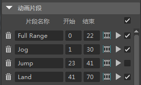

使用“游戏导出器”(Game Exporter)（“文件 > 游戏导出器”(File > Game Exporter)）可以快速导出 FBX 文件中的动画。可以将片段列表导出到单个 FBX 文件，或将每个片段保存到其自己的 FBX 文件。
- 切换到“游戏导出器”(Game Exporter)窗口顶部的“动画片段”(Animation Clips)选项卡。
默认情况下，将显示“动画默认值”(Anim Default)预设，其中为您提供用于导出动画的基本 FBX 选项。有关添加自己的预设的信息，请参见创建“游戏导出器”(Game Exporter)预设。
- 使用下一个下拉菜单指明要“导出全部”(Export All)还是“导出选定”(Export Selected)对象。
如果有为已设置动画的对象创建的选择集，您也可以选择“导出对象集”(Export Object Set)，然后选定该集。
提示： 如果有多个角色在同一场景并要仅导出其中之一，这是指定要导出哪个角色的方法。
将保留对象集，因此下次打开该文件，不需要重新指定要导出的对象。
- 在“动画片段”(Animation Clips)部分中，执行下列操作以添加和定义多个片段。
- 单击 以添加一个新的片段。
默认情况下，新建片段的“开始”(Start)和“结束”(End)帧设置为“时间滑块”(Time Slider)上的当前时间范围。您可以在场景中让动画慢跑以确定动画片段的开始和结束位置，然后在“开始”(Start)和“结束”(End)字段输入这些帧的值。
- 输入片段名称，例如“慢跑”、“跳跃”或“着地”。

- （可选）单击 可框显特定片段的动画播放范围（“时间滑块”(Time Slider)）。
- （可选）按住 Ctrl 键并使用鼠标左键拖动“开始”(Start)或“结束”(End)帧以调整播放范围，随即将看到动画在视口中更新。
- （可选）在“开始”(Start)或“结束”(End)帧上单击鼠标右键，然后选择以下选项之一：
- 增量(Increment)：将“开始”(Start)或“结束”(End)帧的值增加 1。
- 减少(Decrement)：将“开始”(Start)或“结束”(End)帧的值减少 1。
- 设置为当前时间(Set to Current Time)：将“开始”(Start)或“结束”(End)帧设置为“时间滑块”(Time Slider)上的当前选定帧。
- 单击 可框显动画播放范围，且仅播放该片段。
提示： 默认情况下，每个新片段将添加到列表的底部。单击鼠标右键，然后选择“插入片段”(Insert Clip)，可在现有片段之间添加新片段。
- 在“设置”(Settings)部分中，根据需要编辑设置，并指定“将片段保存到单个文件”(Save Clips to Single File)还是“保存多个片段文件”(Save Multiple Clip Files)。有关可用选项的详细信息，请参见“游戏导出器”(Game Exporter)引用。
注： “将片段保存到单个文件”(Save Clips to Single File)处于启用状态时，这些片段将以 FBX 镜头数保存在单个 FBX 文件内。
- 在“路径”(Path)部分中，指定所需的导出目录，并输入要作为每个片段文件名称前缀的名称。
- 单击“导出”(Export)。
基于您设置的“文件名”(Filename)和“路径”(Path)位置，此操作将导出动画。